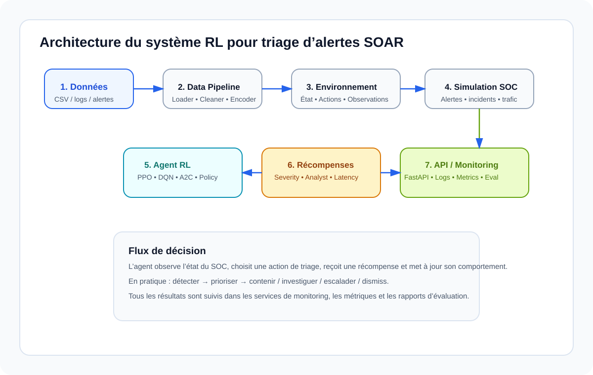

Cadre collaboratif pour un développement organisé, sécurisé et scalable.
Cadre collaboratif, moderne et clair pour un projet d’agent de triage intelligent et d’optimisation de charge analytique.

Ce dépôt soutient un agent de reinforcement learning dédié à l’orientiation automatisée des alertes SOAR, à l’optimisation de la charge analytique et à la supervision des opérations de sécurité.
Contient l'API FastAPI, les pipelines de données, l'environnement RL, les récompenses, la simulation SOC et les services métiers.
Fournit un tableau de bord pour suivre l'état des alertes, les métriques et l'activité de l'agent.
backend/
app/
api/
data_pipeline/
environment/
rl_agent/
reward/
simulation/
database/
services/
monitoring/
evaluation/
models/
utils/
schemas/
frontend/
data/
docs/
scripts/
tests/
.github/workflows/
Branche : feature/rl-agent
Répertoires : backend/app/rl_agent/
Responsabilités : PPO, DQN, A2C, policy, trainer, replay buffer, checkpoints, inference, tuning.
Restrictions : Aucune modification de la logique métier existante.
Branche : feature/data-pipeline
Répertoires : backend/app/data_pipeline/, data/, scripts/preprocess.sh, scripts/seed_database.py
Responsabilités : chargement, nettoyage, feature engineering, validation, export.
Branche : feature/environment
Répertoires : backend/app/environment/, backend/app/simulation/, backend/app/models/
Responsabilités : Gymnasium, états, actions, épisodes, reset, simulation SOC.
Branche : feature/reward-system
Répertoires : backend/app/reward/
Responsabilités : récompenses, config, analyst reward, severity reward, latency reward, false positive reward.
Branche : feature/backend-api
Répertoires : backend/app/api/, backend/app/services/, backend/app/schemas/, backend/main.py, backend/app/config/
Responsabilités : FastAPI, endpoints, validation, intégration backend.
Branche : feature/database-monitoring
Répertoires : backend/app/database/, backend/app/monitoring/, logs/
Responsabilités : MongoDB, repositories, logs, métriques, TensorBoard, monitoring.
Branche : feature/frontend
Répertoires : frontend/
Responsabilités : dashboard, React, charts, statistiques, UI, API consumption.
Restriction : ne doit jamais accéder directement à la base de données.
feature/*
│
▼
Pull Request
│
▼
develop
│
▼
main